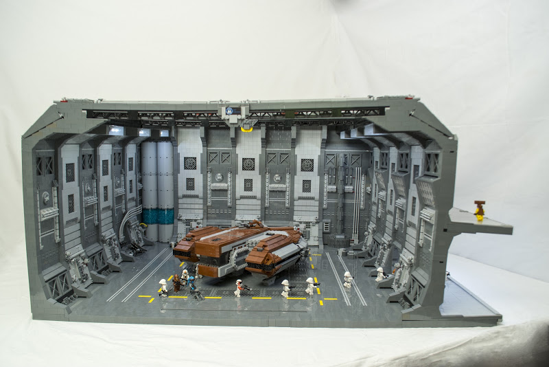
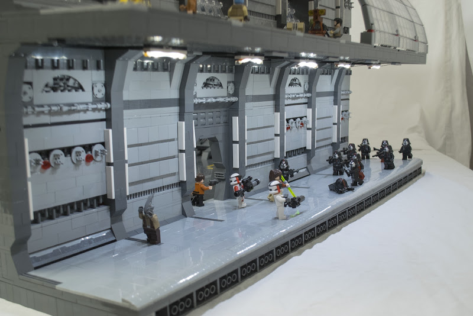

Interview with CRCT Productions
The sixth episode in the RebelLUG Interview series
12/1/18
1. First of all, who are you and what social media platforms are you found on?
My name is Andrew Cazenave-Tapie, I’m a French-Mexican TFOL also known as CRCT Productions. I mainly build large and medium scale Star Wars MOCs. You can actually find me on YouTube and Flickr as CRCT Productions and on Instagram as @andrew_crctprod.
2. Which social media platform is your favorite, or which one do you prefer to visit, and what content do you like to browse and/or produce on each?
In terms of producing content I prefer YouTube as I really like to edit videos and ad cool music to them. I also feel that a video is the best way of showcasing a MOC since you can show a ton of details that can’t necessarily fit all in a single or a couple of pictures. However, it can get very time consuming, so it ends up being much easier to just post a couple WIP pictures on Instagram and Flickr instead of making a whole video about it. As of browsing, I prefer to visit Flickr simply because you can usually find a lot of very high quality MOCs with many very interesting techniques that might be cool to implement in future builds.
3. How long have you been building with LEGO, and how long have you been involved in the LEGO community? Where and when did you start posting online?
I first started collecting LEGO around 10 years ago, but got into Star Wars until 2 years later. A few years later, I started building MOCs and sharing them online three years after that in the LEGO creations Gallery. It wasn’t until late 2015 that I created my YouTube channel and started making MOC videos, however it wasn’t until last year that I started building more seriously.
4. Where do you draw inspiration? Are there any certain builders or MOCs that inspire you? Or do you get inspired outside of LEGO?
Since I’ve lately being building mainly scenes from Star Wars movies or video games, I mainly try to keep a very high level of accuracy. For that reason, I usually search for reference pictures whether they’re from the movie or from cross-section books which help me get inspired on which details to add. Other than that, watching at what some other builders have done and posted (mainly on Flickr) is usually pretty helpful.
5. What's your favorite theme or subject to build in? Why do you find it so appealing?
As I’ve already said my favorite theme to build is Star Wars simply because I’m a huge Star Wars fan and always find very interesting scenes to build. Other than that I’ve always loved to see and build TECHNIC stuff, but unfortunately I don’t have enough parts to do it and prefer using my budget to fund any other Star Wars project.
6. What is your favorite hobby or social activity outside of building? How do you spend your time outside of the LEGO realm?
Most of my time free time is actually used on LEGO stuff whether it’s building, taking pictures, editing videos or simply watching others MOCs and finding inspiration, so I don’t really have a lot of other hobbies or social activity. Nevertheless, I love cycling and really enjoy going out and making some mountain or route cycling, as well as playing video games although I’m not really a gamer.
7. What are your favorites (music, movies, books, etc.)?
I’m sure that from the rest of this interview you can already guess that Star Wars movies are my favorites, more specifically Episode III and Episode V. In terms of books, my favorite one is the Revan book from Star Wars legends (especially because it’s my favorite character from the Star Wars universe). My favorite video game is the WRC 7 as I really like motorsports and find it very cool and challenging. And finally I overall like classical, instrumental and cinematic music.
8. What's an aspect of the LEGO community that you would want to change?
In my opinion there isn’t that much that I would want to change from the LEGO community, however something that I find particularly annoying and generally speaking bad for the online community is the amount of drama that has been created lately by some people, because I feel that all this only creates issues and makes people that could join the community next stay away from it.
9. What is your favorite MOC that you’ve built? Or the one you’re most proud of?
Without a doubt the MOC that I’ve built that I’m the proudest of has to be the Star Wars: Knights of the Old Republic hangar on Manaan MOC that I built for BrickFair Virginia, simply because how challenging it was to build something at that scale that could come apart in multiple sections so that I could fit it into a couple suitcases and flight to the convention, and still be sturdy enough so it wouldn’t blow into pieces during the flight, in only a month. On top of that I was able to keep a very detailed and clean look throughout the whole MOC and use a very good amount of very interesting technics that I was able to come up. Overall I feel like I was able to have a very good final product that caught most people’s eyes and left a very good impression in them.
 
10. Do all your friends/family know you build with LEGO as a hobby? Or is it something that has never come up in a conversation?
I think pretty much all of my family knows that I build with LEGO and have at least seen one of my builds. In terms of my friends I would say most of them know LEGO is part of my hobby, and some of them are even subscribed to my YouTube channel as they were at one point LEGO fans themselves, However I’m the only one of them that still collects, and builds with LEGO.